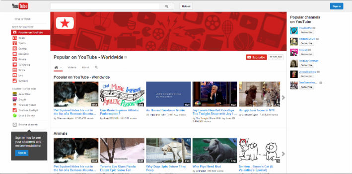
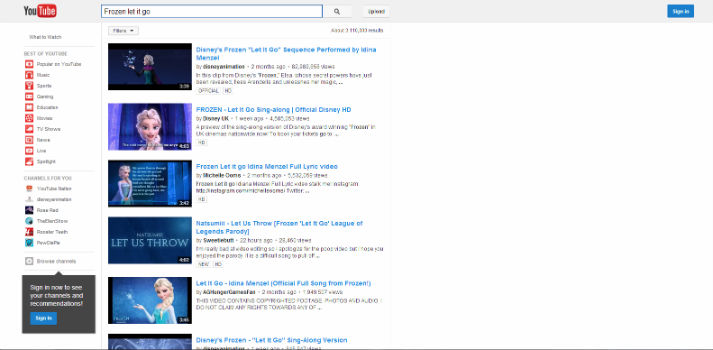
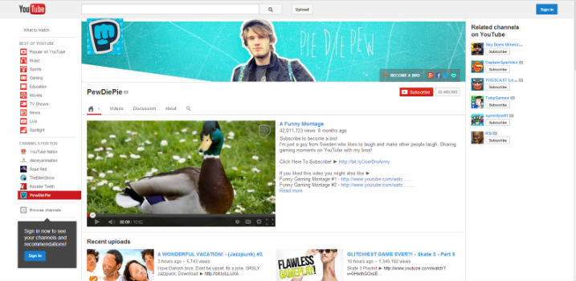
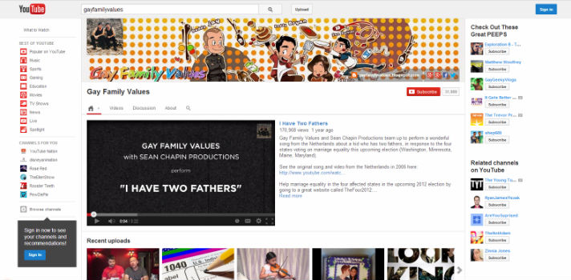

Assignment 1 - Web Design
The Basics of HTML
What is the difference between a tag and an HTML element? Why does this matter?
An HTML element is a section of HTML code that includes an opening tag, a closing tag and everything in between those two parts of code. A tag is just the first and last section of codes set off by < and > signs. This distinction is important because the tag defines the type of element. This can be a little confusing so lets look at an example:
<title> Assignment 1 </title>
The code above is an example of an element. The "<title>" and "</title>" sections are tags. They show that the element is, in this case, a title.
What information does (should) the <head> element contain? Why isn’t it included in the <body>?
The <head> element should contain any information that describes the web page. This includes the title shown in tabs, the overall style of the page, etc. On the other hand, the <body> element contains the actual content of the web page, as well as deviations from the overall scheme of the page. For example, my <head> element may color the web page's text black, but if I wanted to make one word pink, I would place that information in the <body> element. By not including this information in the body, it makes it much easier to find the overall information of the page and change it if necessary.
Why would someone include ‘child’ elements on a web page? Have you on this page? Give 2 examples and explain why you chose to nest the elements.
A 'child' element is a element that is inside of another element (the 'parent' element). You would want to use this type of parent/child relationship (a.k.a nesting) if you wanted to organize various elements or give an element multiple properties. This relationship normally occurs when using level headers. Here are a couple examples I used on this page:
<h3><u>What is the difference between a tag and an HTML element? Why does this matter?</u></h3>
Here the underline element (<u>) is the child of the level header element(<h3>.) This gives the element two properties: it is both underlined and a third level "header".
<li><a href="index.html">Home Page</a></li>
Here the anchor element (<a>) is the child of the list item element (<p>). This gives the element two properties: it is both an anchor and a list item.
My Website of Interest
One website I often use is Youtube because it has a wealth of videos on any topic.
One of the main reasons, I use Youtube is to listen to music. You can watch music videos, watch covers of popular (and not-so-popular) songs, and listen to full soundtracts. Even while I am writing this webpage, I am using Youtube to listen to Frozen and Next To Normal soundtracks.
I also really like watching gaming videos. Its fun to watch other people do guides as well as complete amazing achievements. My current favorites are Pewdiepie and Smosh Games.
Finally, you can learn a lot from Youtube. I personally enjoy watching a lot of LGBT youtubers because they do videos about current events and important issues.